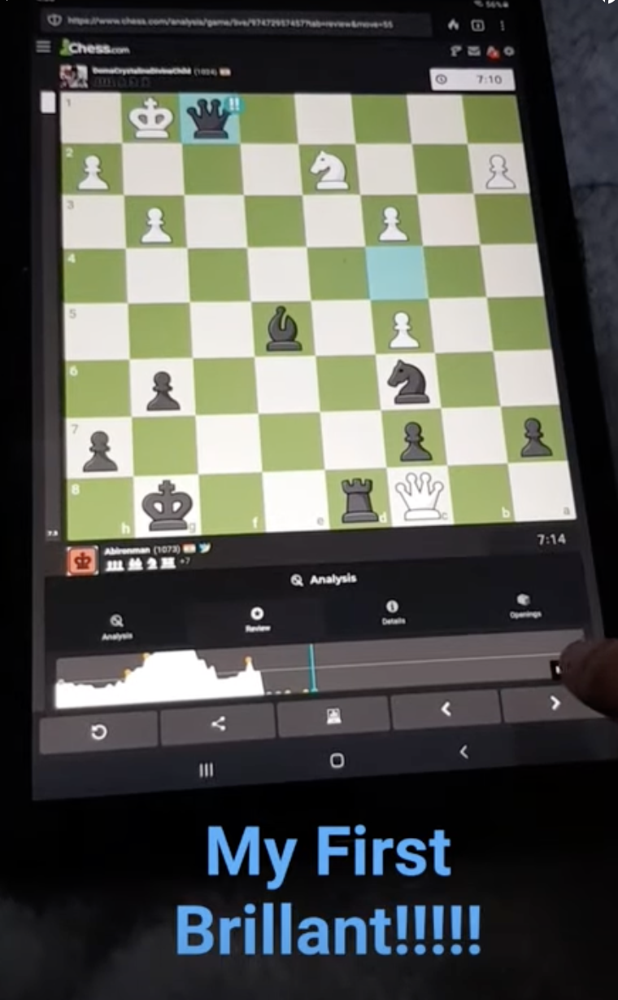

About Me: chess
- One of my main Hobbies includes playing chess, it doesn't matter If it is online or offline.
- As you can see in the picture on the right, it shows a brillant move, which is really rare, we are talking 0.01% chance, how incredible is that?
About Me: Minecraft
- One of my main Hobbies also include playing minecraft on bedrock edition, I can play for hours and not realize it.
- The pictures around these are peictures of me finding diamonds, and gearing up